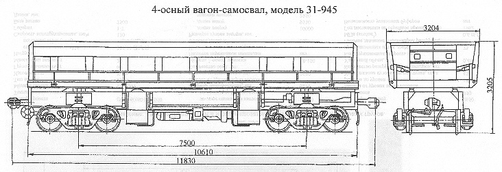

Назначение: для транспортировки и механизированной разгрузки сыпучих и кусковых грузов
Параметры
| Номер проекта | 945.00.000-0 |
| Технические условия | ТУ 3.05 Украины 003-92 |
| Модель вагона | 31-945 |
| Тип вагона | |
| Изготовитель | СВЗ |
| Грузоподъемность, т | 66 |
| Масса тары вагона, т | 27 |
| Нагрузка: статическая осевая, кН(тс) |
230,5(23,5) |
| погонная, кН/м(тс/м) | 77(7,86) |
| Скорость конструкционная, км/ч | 120 |
| Габарит | 1-Т |
| База вагона, мм | 7500 |
| Длина, мм: по осям сцепления автосцепок |
11830 |
| по концевым балкам рамы | 10610 |
| Ширина максимальная, мм | 3204 |
| Высота от уровня верха головок рельсов максимальная, мм | 3205 |
| Количество осей, шт. | 4 |
| Модель 2-осной тележки | 18-100 |
| Наличие переходной площадки | нет |
| Наличие стояночного тормоза | есть |
| Объем кузова, м3 | 36 |
| Размеры кузова внутри, мм: длина вверху |
10306 |
| длина внизу | 9880 |
| ширина вверху | 2880 |
| ширина внизу | |
| высота | 1300 |
| Высота от уровня верха головок рельсов до уровня пола, мм | 1905 |
| Угол наклона кузова при разгрузке, град | 45 |
| Количество разгрузочных цилиндров, шт. | 4 |
| Удельный объем, м3/т | 0,55 |
| Рабочее давление в цилиндрах разгрузки, МПа(кгс/см2) | 0,6(6,0) |
| Год постановки на серийное производство или закупки вагона | 1993 |
| Возможность установки буфера | есть |